This deathmatch mod is a tactical warfare styled combat experience. It will feature a weapon modifier system, customizable loadouts, supply drops spawning throughout the maps, and speaking of maps, the levels for this mod will be large battlefield style maps with immersive environments and interactive elements such as fixed machinegun emplacements and more.

The Afterlands is a 10 level singleplayer WAD for HEXEN, designed for GZDoom and Zandronum. It is the sequel to Cyrgoth's Revenge, taking place immediately after the events from Cyrgoth's Revenge. Currently WIP. Expected release sometime around mid to late 2020.
 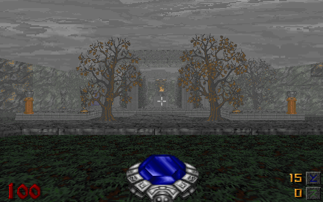
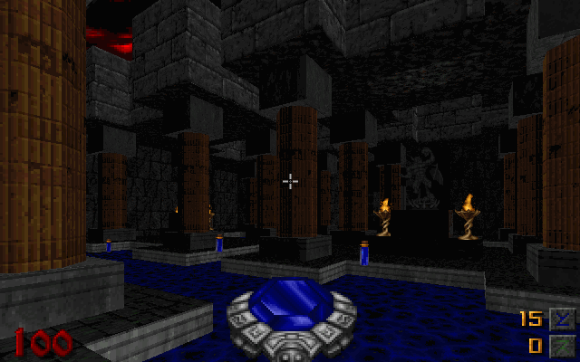
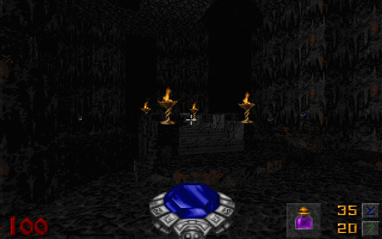
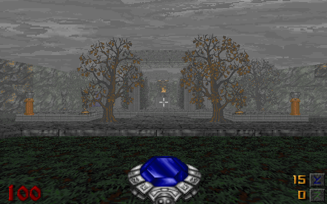
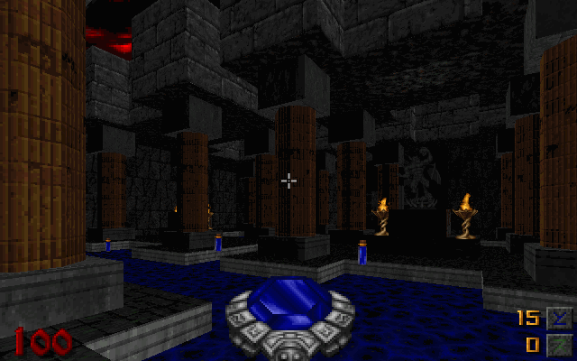
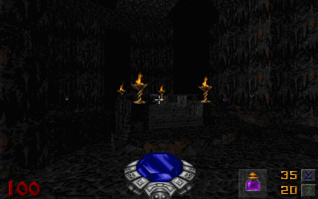
A 32 map DOOM 2 vanilla megawad under construction. 21 maps are complete currently. This WAD will not see a public release, as it is my ultimate creation, and will be gifted to those I deem worthy. You could also just hit me up and ask for it once it's complete, that works as well.


 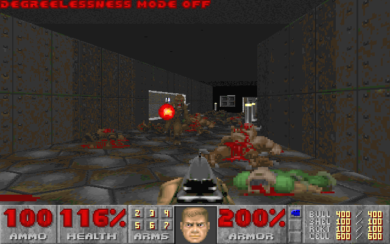
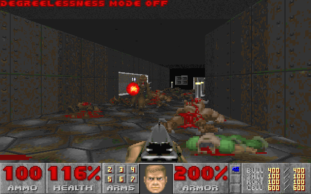

 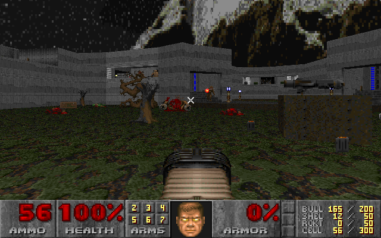
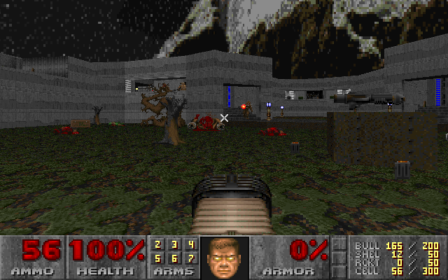
 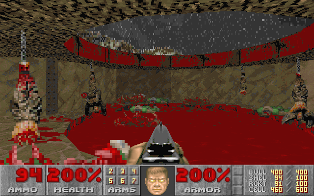
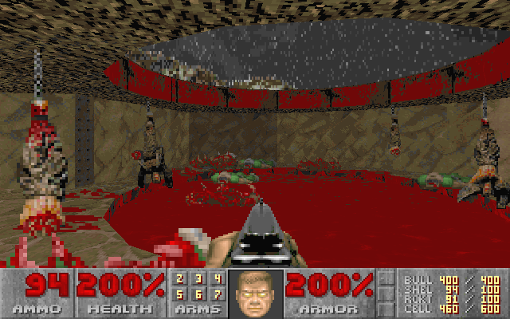
 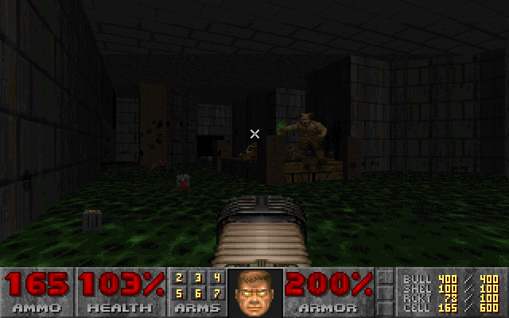
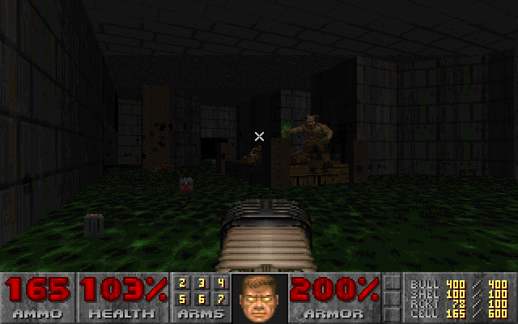

Cerecula Castle is a multi-hub Hexen WAD I plan on starting sometime after I release The Afterlands. It is intended to be a group project with several mappers participating. Unlike the Cyrgoth series, this WAD will have some non-vanilla elements, such as new keys, new puzzles, a brand new Schilder-esq soundtrack composed by me. Other than those things, I don't plan on straying too far from a vanilla theme. No new weapons, enemies, items, decorations, etc. in order to retain compatibility with gameplay mods. Currently I have some very minimal level designing started, including a nearly-complete scrapped level from The Afterlands, as well as some of the soundtrack completed as well. If you are interested in mapping for this WAD sometime in the future, let me know.

eMail:
pete_hunt@comcast.net
Discord Tag:
Seidolon#3197